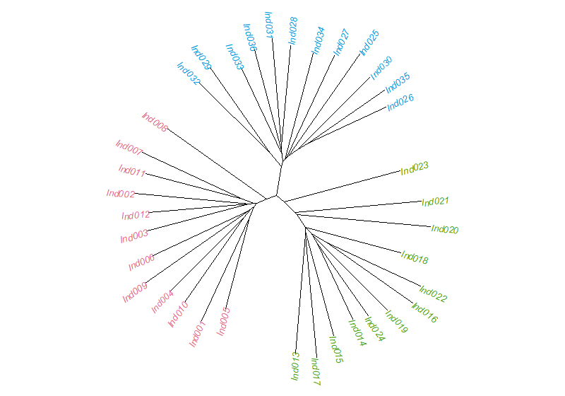
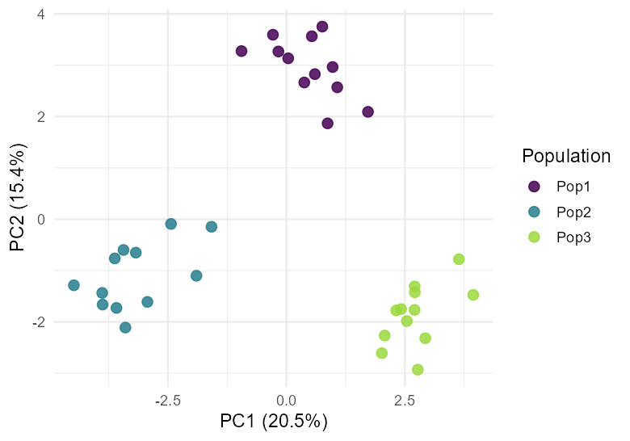
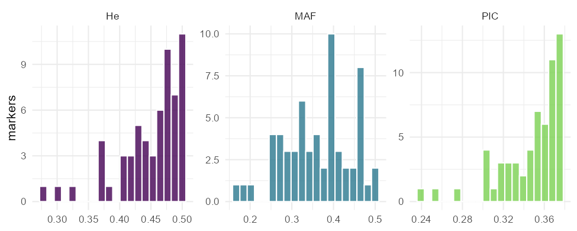
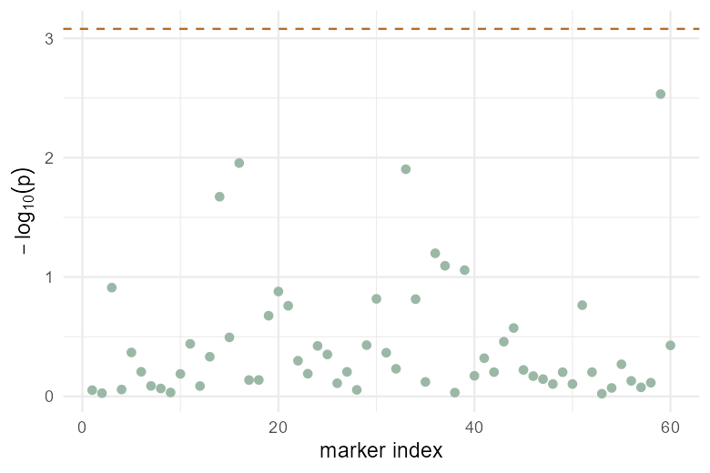
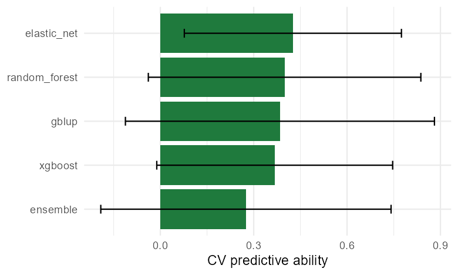

User Manual
This manual covers installation, the expected data format, and every analysis module in GenoSuite.
Installation
Windows installer (recommended)
- Go to the Download page and download the latest
GenoSuite-Setup.exe. - Double-click the installer and follow the prompts.
- Launch GenoSuite from the Start menu. The workspace opens in your default web browser; all computation runs locally on your machine.
No separate R installation is required — the installer is self-contained.
Running from source
If you have R installed:
install.packages(c("shiny", "bslib", "DT", "ggplot2", "ape", "vegan",
"glmnet", "ranger", "xgboost"))
# install GSbench from R-universe
install.packages("GSbench", repos = "https://mqfarooqi1.r-universe.dev")
shiny::runApp("app")Data format
GenoSuite expects a CSV file in which:
- Each row is one individual / accession / OTU.
- One column holds a unique ID (e.g.
Ind001). - Optionally, one column holds a grouping variable (e.g.
Population), used to colour plots and to compute Fst. - Optionally, one numeric phenotype column (e.g.
Trait), used for GWAS and genomic prediction. - All remaining numeric columns are treated as markers, coded as allele dosage:
0,1, or2(copies of the reference/alternate allele).
| ID | Population | Trait | SNP001 | SNP002 | … |
|---|---|---|---|---|---|
| Ind001 | Pop1 | 12.4 | 0 | 2 | … |
| Ind002 | Pop1 | 9.8 | 1 | 1 | … |
On the Data tab, use the selectors to tell GenoSuite which columns are the ID, group, and phenotype. Everything else is used as markers.
New to the app? Click Load demo SNP dataset on the Data tab. It loads 36 individuals from 3 populations, 60 SNPs, and a heritable trait — enough to try every module immediately.
Modules
Data
Import a CSV (or load the demo), preview it as an interactive table, and assign the ID, grouping, and phenotype columns. These assignments drive every other module.
Distance
Computes a pairwise distance / dissimilarity matrix among individuals.
- Metrics: Euclidean, Manhattan (city-block), 1 − Pearson correlation, Jaccard (presence/absence), Gower.
- Standardise markers rescales each marker to mean 0 / variance 1 before computing Euclidean-type distances.
- The result is shown as a clustered heatmap and can be exported to CSV.
Clustering
Builds a tree from the distance matrix.
- Methods: UPGMA (average linkage), Ward’s method, complete linkage, single linkage, and neighbour-joining (NJ).
- Hierarchical methods are drawn as dendrograms; NJ as an unrooted tree with tips coloured by group.
- Export the tree in Newick format for use in other phylogenetic software.

Ordination
Reduces the data to a few interpretable axes.
- PCA is computed directly on the markers.
- PCoA (principal coordinates) is computed on the distance matrix.
- Choose which axes to plot; points are coloured by group, with a scree plot showing the variance explained by each axis.

Mantel test
Tests the correlation between two distance matrices (built with two metrics) using permutations, reporting the Mantel statistic r and its significance, with a scatter plot of the paired distances.
Diversity
Summarises genetic diversity from the allele dosages.
- Per marker: allele frequency, minor-allele frequency (MAF), expected heterozygosity (He), observed heterozygosity (Ho), and polymorphism information content (PIC).
- Between groups: Nei’s Fst (Gst) per marker and overall (requires a grouping column).
- Summary value boxes, distribution histograms, a sortable table, and CSV export.

GWAS
Performs a genome-wide association scan: each marker is regressed on the phenotype.
- PC structure correction: include the first k principal components as covariates to control for population structure.
- Outputs a Manhattan plot (with a Bonferroni significance line), a QQ plot to check calibration, and a table of the strongest associations.
- Requires a phenotype column.

Prediction
Cross-validated genomic prediction powered by the GSbench engine.
- Models: GBLUP plus machine-learning predictors — elastic net, random forest, gradient boosting (xgboost), and a stacked ensemble.
- Runs k-fold cross-validation and reports predictive ability (correlation between predicted and observed values on held-out folds), with a bar chart and table.
- Fit a final GBLUP to obtain genomic estimated breeding values (GEBVs) and the estimated genomic heritability (h²); export the GEBVs to CSV.
- Requires a phenotype column.

Reproducibility & citation
Analyses use established methods from the population-genetics and genomic- prediction literature, implemented on top of base R, ape, vegan, and GSbench. If GenoSuite contributes to a publication, please cite it (see the License page).
Support
Questions, bugs, and feature requests: github.com/mqfarooqi1/GenoSuite/issues.